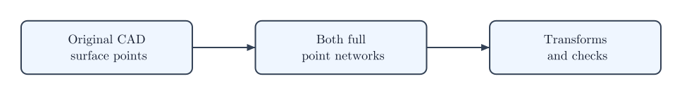
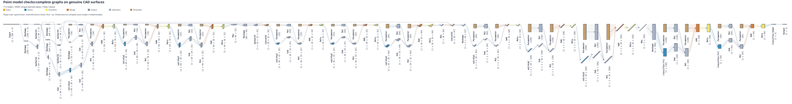
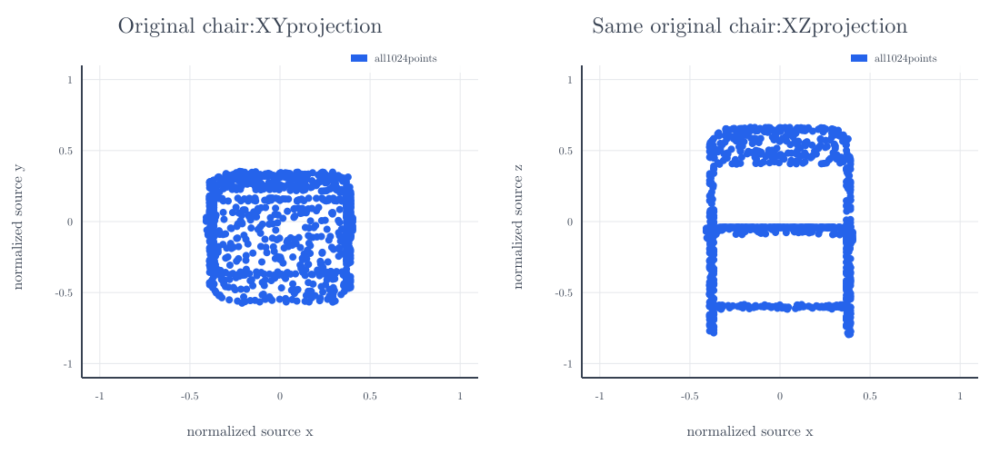
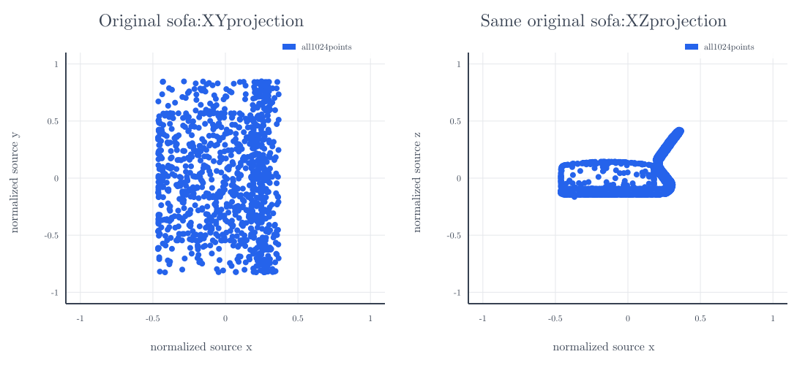
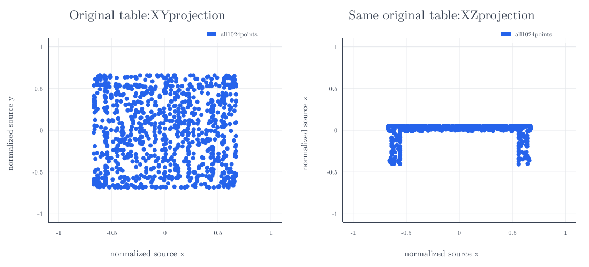
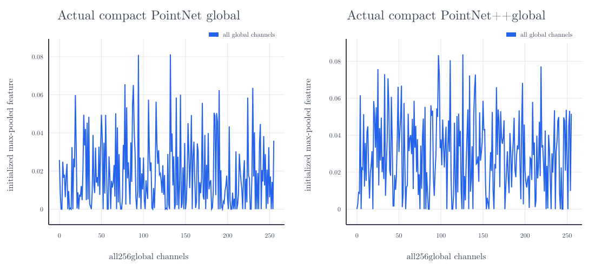
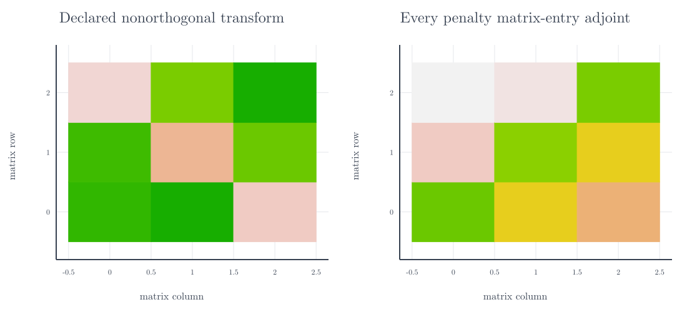
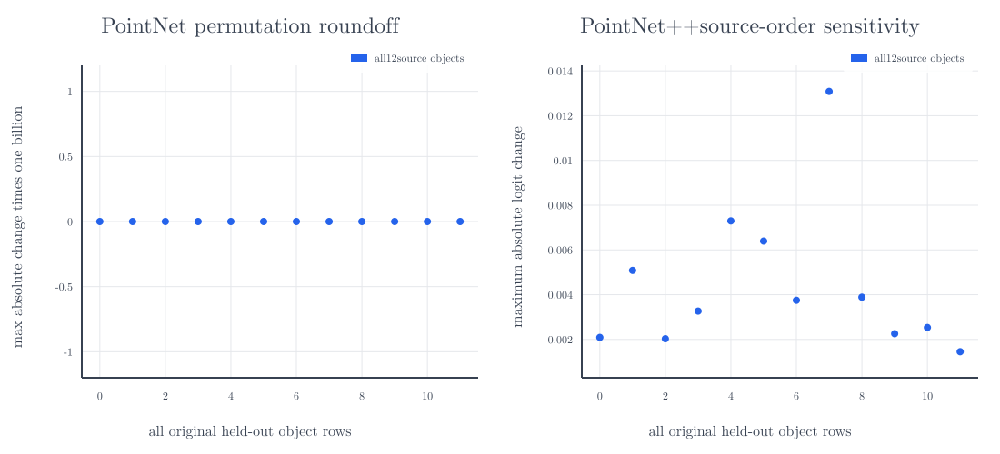

Point model checks:complete graphs on genuine CAD surfaces
Abstract
Original ModelNet surfaces feed complete PointNet and PointNet++graphs. Every endpoint/gradient,identity T-Net,orthogonality penalty and ordering check is explicit,with independent source-sampling and derivative oracles.
Source example: examples/cpp/source/nn/1_convolutional_neural_networks/1.10_3d_and_video_convolutions/point_models_checks.cpp.
The method
Keep every source T-Net/shared MLP or set abstraction,execute full and compact graphs on original CAD surfaces,and distinguish frozen discrete grouping from differentiable point features. These initialization checks fit no classifier;training remains explicit in the following model reports.
The concept diagram below is drawn by dm::graphics::Diagram. Its editable C++
source is the complete block below; regeneration uses the same datamunge toolchain
as the numerical examples. Exports consume the saved local SVG.
#include <dm/dm.hpp>
int main() {
std::filesystem::create_directories("build");
dm::graphics::Diagram diagram;
diagram.node("n0", {0.0, 0}, "Original CAD\n surface points");
diagram.node("n1", {5.2, 0}, "Both full\n point networks");
diagram.node("n2", {10.4, 0}, "Transforms\n and checks");
diagram.edge("n0", "n1").edge("n1", "n2");
diagram.save_svg("build/point_models_checks_concept.svg");
}
Executed tensor architecture
This figure executes the inference configuration shown in the code, using a zero-valued shape probe without fitting or loading a checkpoint. Named stage boundaries group whole subgraphs where available; other nodes retain functional-layer detail. Exact batch-inclusive shapes and reachable parameter totals come from the trace. Shared linear scales map spatial dimensions and channel counts to blocks; the one-pixel visibility floor is disclosed in the legend. Labels use compact monospace text, rotate counterclockwise and sit beside their own glyphs. Arrows flow left to right; wide diagrams scroll at native size on the website.
#include <dm/dm.hpp>
int main() {
namespace n = dm::nn;
namespace m = n::models;
n::set_num_threads(2);
std::filesystem::create_directories("build");
n::ParameterStore p(17), state(18);
m::PointConfig c{4, 3, 256, 64, 16, 16, 32};
n::Module architecture_model(
[&](const n::Tensor& image) { return m::PointNetPlusPlus(p, state, image, c).logits; },
"Point model checks:complete graphs on genuine CAD surfaces");
n::ModelPlotOptions options;
options.style = n::ModelPlotStyle::Flow;
options.detail = n::ModelPlotDetail::Blocks;
options.labels = {.type = n::ModelPlotLabel::NameAndShape, .size = 12, .wrap = 24};
options.spacing = {.layer = 24, .lane = 12, .label = 8, .margin = 20};
options.sizing.spatial_size = 96;
options.sizing.channel_size = 42;
options.sizing.minimum_extent = 1;
options.opacity = .8;
const auto diagram = architecture_model.plot(n::zeros({1, 256, 3}), options);
diagram.save_svg("build/point_models_checks_architecture.svg");
std::print(
"{} displayed nodes; {} reachable learned values.\n",
diagram.nodes().size(),
diagram.parameter_count());
}112 displayed nodes; 93907 reachable learned values.

Genuine original CAD surfaces,not abstract geometric stand-ins
Use official ModelNet10.zip,473402300bytes,SHA256 9d8679435fc07d1d26f13009878db164a7aa8ea5e7ea3c8880e42794b7307d51. Classes0/1/2 are chair/sofa/table. Per class,lexical first8official training meshes fit,next2validate,and first4official test meshes test:24/6/12objects. Original OFF bytes/member names/hashes remain local. Object IDs are disjoint; near-duplicate CAD shapes across original records are not certified absent.
#include <dm/dm.hpp>
int main() {
const std::filesystem::path cache = dm::datasets::data_home();
dm::datasets::prepare_example_data("mesh", (cache / "modelnet").string());
}Fan triangulation is topology metadata. Double tensors compute triangle areas, sample1024faces proportional to area with generator941+sourceID,and use square-root-uniform barycentric draws. Subtract sampled mean,divide by maximum sampled Euclidean radius,then round Float32. Retain all face IDs,uniforms, centers/radii. Independent NumPy/OFF/RNG replay matches all129024XYZ values, 43008face choices and86016barycentric uniforms exactly. Full graphs use1024 points;compact fits use the first256without creating new points.
Plot every1024sampled point of one actual fitting mesh per source class,in XY/XZprojections. Each point is an observation sampled from original CAD triangles;occlusion/depth is not reconstructed by these simple scatter plots.
#include <dm/dm.hpp>
int main() {
namespace n = dm::nn;
namespace m = n::models;
n::set_num_threads(2);
std::filesystem::path cache;
if (const auto *p = std::getenv("DATAMUNGE_DATA_DIR"))
cache = p;
else if (const auto *p = std::getenv("XDG_CACHE_HOME"))
cache = std::filesystem::path(p) / "datamunge/datasets";
else
cache = std::filesystem::path(std::getenv("HOME")) / ".cache/datamunge/datasets";
std::filesystem::path root = cache / "modelnet";
if (const auto *p = std::getenv("DATAMUNGE_POINT_DIR"))
root = p;
else
dm::datasets::prepare_example_data("mesh", root.string());
const auto pools = m::LoadPoints(root);
const auto &fit = pools[0];
const auto &validation = pools[1];
const auto &test = pools[2];
std::map<std::string, n::Tensor> original;
for (const auto &[key, value] : n::load_npz((root / "point_clouds.npz").string()))
original[key] = value;
std::filesystem::create_directories("figures");
for (int label : {1, 2, 0}) {
const int row = label * 8;
const auto xyz = n::select(original.at("fit_xyz"), 0, row);
const std::string kind = label == 0 ? "chair" : label == 1 ? "sofa" : "table";
auto a = dm::graphics::RPlot::create(), b = dm::graphics::RPlot::create();
a.points(n::select(xyz, 1, 0).to_vector<double>(),
n::select(xyz, 1, 1).to_vector<double>(), "all1024points", {37, 99, 235})
.title("Original " + kind + ":XYprojection")
.x_label("normalized source x")
.y_label("normalized source y")
.x_limits(-1.1, 1.1)
.y_limits(-1.1, 1.1);
b.points(n::select(xyz, 1, 0).to_vector<double>(),
n::select(xyz, 1, 2).to_vector<double>(), "all1024points", {37, 99, 235})
.title("Same original " + kind + ":XZprojection")
.x_label("normalized source x")
.y_label("normalized source z")
.x_limits(-1.1, 1.1)
.y_limits(-1.1, 1.1);
const auto name = label == 0 ? "point_models_checks_data"
: "point_models_checks_data_class" + std::to_string(label);
auto layout = dm::graphics::RLayout::create(1, 2);
layout.add(a).add(b).size(1100, 500).fit_panels().save_svg("build/" + name + ".svg");
if (label != 0)
std::filesystem::copy_file("build/" + name + ".svg", "figures/" + name + ".svg",
std::filesystem::copy_options::overwrite_existing);
std::print("Actual {}sourceID {},1024points,maxradius {:.9f};compact first256 retained.\n",
kind, n::select(fit.source, 0, row),
n::max(n::sqrt(n::sum(n::square(xyz.to(n::DType::Float64)), {1}))).item());
}
std::print(
"Original selected class counts:{}/{}/{}.\n", n::sum(n::one_hot(fit.labels, 3), {0}),
n::sum(n::one_hot(validation.labels, 3), {0}), n::sum(n::one_hot(test.labels, 3), {0}));
}Actual sofasourceID int32[] 14,1024points,maxradius 0.999999993;compact first256 retained. Actual tablesourceID int32[] 28,1024points,maxradius 0.999999989;compact first256 retained. Actual chairsourceID int32[] 0,1024points,maxradius 1.000000014;compact first256 retained. Original selected class counts:float32[3] [8, 8, 8]/float32[3] [2, 2, 2]/float32[3] [4, 4, 4].



Both complete networks,with no training hidden in the checks
This supporting example initializes and checks graphs;it does not fit a classifier. The subsequent PointNet and PointNet++reports show their explicit optimizer loops. Both full40class1024point and compact threeclass256point configurations retain every source layer. Full heads are random40column fixtures and are not interpreted as predictions of the three selected classes.
PointNet has both3x3input and64x64feature T-Nets,shared64/64then64/128/1024 MLPs,point max and512/256classifier. PointNet++SSG has radius.2/.4FPS/ball abstractions,shared64/64/128then128/128/256then256/512/1024global layers, max pools and512/256classifier. Every unit is Glorotdense/bias plus source population BN(gamma/beta,eps.001,EMA.9). Classifier training keep.7/.5dropout follows BOTH hidden layers. Inference freezes all moving arrays.
#include <dm/dm.hpp>
int main() {
namespace n = dm::nn;
namespace m = n::models;
n::set_num_threads(2);
std::filesystem::path cache;
if (const auto *p = std::getenv("DATAMUNGE_DATA_DIR"))
cache = p;
else if (const auto *p = std::getenv("XDG_CACHE_HOME"))
cache = std::filesystem::path(p) / "datamunge/datasets";
else
cache = std::filesystem::path(std::getenv("HOME")) / ".cache/datamunge/datasets";
std::filesystem::path root = cache / "modelnet";
if (const auto *p = std::getenv("DATAMUNGE_POINT_DIR"))
root = p;
else
dm::datasets::prepare_example_data("mesh", root.string());
const auto pools = m::LoadPoints(root);
const auto &fit = pools[0];
const auto &validation = pools[1];
const auto &test = pools[2];
std::map<std::string, n::Tensor> original;
for (const auto &[key, value] : n::load_npz((root / "point_clouds.npz").string()))
original[key] = value;
auto a = dm::graphics::RPlot::create(), b = dm::graphics::RPlot::create();
std::print("| graph | original input points | values | learned leaves | moving leaves | "
"global shape | head shape | finite gradients | nonzero gradients "
"|\n|---|---:|---:|---:|---:|---|---|---:|---:|\n");
for (bool plus : {false, true})
for (bool compact : {false, true}) {
const auto c = compact ? m::PointConfig{4, 3, 256, 64, 16, 16, 32} : m::PointConfig{};
n::ParameterStore p(989), state(991);
const auto xyz =
n::slice_axis(n::slice_axis(original.at("fit_xyz"), 0, 0, 1), 1, 0, c.points);
const auto out =
plus ? m::PointNetPlusPlus(p, state, xyz, c) : m::PointNet(p, state, xyz, c);
int finite = 0, nonzero = 0;
for (const auto &g : n::grad(n::mean(n::square(out.logits)), p.parameters())) {
if (!n::all(n::is_finite(g)).item<bool>())
return 1;
++finite;
nonzero += n::sum(n::square(g.to(n::DType::Float64))).item() > 0;
}
std::print("| {}{} | {} | {} | {} | {} | {} | {} | {} | {} |\n",
plus ? "PointNet++" : "PointNet", compact ? " compact" : " full", c.points,
p.count(), p.size(), state.size(), out.global.shape(), out.logits.shape(),
finite, nonzero);
if (compact) {
auto &plot = plus ? b : a;
plot.lines(n::arange(0, out.global.size(1)).to_vector<double>(),
out.global.reshape({-1}).to_vector<double>(), "all global channels",
{37, 99, 235})
.title(plus ? "Actual compact PointNet++global" : "Actual compact PointNet global")
.x_label("all256global channels")
.y_label("initialized max-pooled feature");
}
}
auto layout = dm::graphics::RLayout::create(1, 2);
layout.add(a).add(b).size(1100, 500).fit_panels().save_svg(
"build/point_models_checks_graphs.svg");
}| graph | original input points | values | learned leaves | moving leaves | global shape | head shape | finite gradients | nonzero gradients |
|---|---|---|---|---|---|---|---|---|
| PointNet full | 1024 | 3480049 | 74 | 34 | [1, 1024] | [1, 40] | 74 | 34 |
| PointNet compact | 256 | 171836 | 74 | 34 | [1, 256] | [1, 3] | 74 | 34 |
| PointNet++ full | 1024 | 1475688 | 46 | 22 | [1, 1024] | [1, 40] | 46 | 46 |
| PointNet++ compact | 256 | 93907 | 46 | 22 | [1, 256] | [1, 3] | 46 | 46 |

Identity T-Nets and all nine penalty derivatives
Both PointNet transform heads use zero weights/bias plus identity,so their initial matrices are exactlyI. Upstream T-Net gradients initially vanish until the final transform head moves;pre-BN biases can also have zero adjoints. Connected finite gradients are the structural check,not a demand that all initial adjoints be nonzero. During fitting,the caller adds the feature-transform penalty .0005*sum((AAT-I)2) to mean categorical CE. It sums across the batch, matching the source;it does not project the transform or hide an optimizer.
A declared nonorthogonal3x3fixture exposes the penalty and every entry's adjoint. Orthogonal rotation and identity have exactly zero penalty. The native suite independently checks all nine entries against literal host algebra.
#include <dm/dm.hpp>
int main() {
namespace n = dm::nn;
namespace m = n::models;
auto transform = n::tensor({1.1, .2, -.1, .05, .9, .15, 0., -.1, 1.05}, {1, 3, 3});
transform.requires_grad_(true);
const auto loss = m::PointTransformPenalty(transform, 3);
const auto gradient = n::grad(loss, {transform})[0];
const auto rotation = n::tensor({0., -1., 0., 1., 0., 0., 0., 0., 1.}, {1, 3, 3});
const auto orthogonal = m::PointTransformPenalty(rotation, 3);
if (orthogonal.item() != 0)
return 1;
std::print("Declared nonorthogonal penalty {:.9g};all9entry adjoints {};orthogonal rotation "
"penalty {:.3g}.\n",
loss.item(), gradient, orthogonal.item());
auto a = n::plot_tensor_map(n::select(transform, 0, 0), -.2, 1.2),
b = n::plot_tensor_map(n::select(gradient, 0, 0), -n::max(n::abs(gradient)).item(),
n::max(n::abs(gradient)).item());
a.title("Declared nonorthogonal transform").x_label("matrix column").y_label("matrix row");
b.title("Every penalty matrix-entry adjoint").x_label("matrix column").y_label("matrix row");
auto layout = dm::graphics::RLayout::create(1, 2);
layout.add(a).add(b).size(1100, 500).fit_panels().save_svg(
"build/point_models_checks_penalty.svg");
}Declared nonorthogonal penalty 0.000122321886;all9entry adjoints float32[1, 3, 3] [[[0.000594, 0.000525, -0.0002485], [0.0004675, -0.0002225, 4.825e-05], [-0.00026825, 4.9e-05, 0.0002815]]];orthogonal rotation penalty 0.

PointNet permutation invariance and PointNet++selection dependence
Reverse the point order of every actual held-out compact cloud. PointNet's shared layers/max pooling preserve logits up to floating tolerance. PointNet++ uses first-index FPS and first input-order radius hits,so its neighborhoods can change under a permutation;do not claim the same invariance. Both remain unchanged under repeated inference with fixed observed XYZ and moving state. Replace one original cloud by zeros only as an explicit sensitivity control. No labels or object identities enter either forward.
#include <dm/dm.hpp>
int main() {
namespace n = dm::nn;
namespace m = n::models;
n::set_num_threads(2);
std::filesystem::path cache;
if (const auto *p = std::getenv("DATAMUNGE_DATA_DIR"))
cache = p;
else if (const auto *p = std::getenv("XDG_CACHE_HOME"))
cache = std::filesystem::path(p) / "datamunge/datasets";
else
cache = std::filesystem::path(std::getenv("HOME")) / ".cache/datamunge/datasets";
std::filesystem::path root = cache / "modelnet";
if (const auto *p = std::getenv("DATAMUNGE_POINT_DIR"))
root = p;
else
dm::datasets::prepare_example_data("mesh", root.string());
const auto pools = m::LoadPoints(root);
const auto &fit = pools[0];
const auto &validation = pools[1];
const auto &test = pools[2];
std::map<std::string, n::Tensor> original;
for (const auto &[key, value] : n::load_npz((root / "point_clouds.npz").string()))
original[key] = value;
auto a = dm::graphics::RPlot::create(), b = dm::graphics::RPlot::create();
std::print("| model | maximum reverse-order logit change | repeat error | zero-cloud change "
"| all arrays immutable |\n|---|---:|---:|---:|---|\n");
for (bool plus : {false, true}) {
n::ParameterStore p(971), state(977);
const m::PointConfig c{4, 3, 256, 64, 16, 16, 32};
auto infer = [&](const n::Tensor &xyz) {
n::NoGradGuard guard;
return plus ? m::PointNetPlusPlus(p, state, xyz, c).logits
: m::PointNet(p, state, xyz, c).logits;
};
const auto z = infer(test.xyz);
const auto before = p.flatten(), moving = state.flatten();
const auto reversed = infer(n::reverse(test.xyz, {1}));
const auto repeat = n::max(n::abs(z - infer(test.xyz)));
const auto change = n::max(n::abs(z - reversed), {1});
const auto one = n::slice_axis(test.xyz, 0, 0, 1);
const auto blank = n::sum(n::abs(infer(one) - infer(n::zeros_like(one))));
const bool immutable = before == p.flatten() && moving == state.flatten();
if (repeat.item() != 0 || !immutable || blank.item() <= 1e-7 ||
(!plus && n::max(change).item() > 2e-6))
return 1;
std::print("| {} | {:.9g} | {:.3g} | {:.9g} | {} |\n", plus ? "PointNet++" : "PointNet",
n::max(change).item(), repeat.item(), blank.item(), immutable);
auto &plot = plus ? b : a;
plot.points(n::arange(0, test.xyz.size(0)).to_vector<double>(),
(change.to(n::DType::Float64) * (plus ? 1. : 1e9)).to_vector<double>(),
"all12source objects", {37, 99, 235})
.title(plus ? "PointNet++source-order sensitivity" : "PointNet permutation roundoff")
.x_label("all original held-out object rows")
.y_label(plus ? "maximum absolute logit change"
: "max absolute change times one billion");
}
auto layout = dm::graphics::RLayout::create(1, 2);
layout.add(a).add(b).size(1100, 500).fit_panels().save_svg(
"build/point_models_checks_permutation.svg");
}| model | maximum reverse-order logit change | repeat error | zero-cloud change | all arrays immutable |
|---|---|---|---|---|
| PointNet | 0 | 0 | 0.0960100517 | true |
| PointNet++ | 0.013086468 | 0 | 0.151500151 | true |

Verification and scope
Six native tests execute original nine-entry penalty derivatives,both full and compact graph inventories,every finite derivative on genuine1024point surfaces,identity/permutation checks,an independent all18coordinate shared MLP/population-BN/input finite-difference fixture,every compact source row, all moving-state modes and invalid inputs. Fourteen public examples compile and run. The original complete checks and independent mesh sampling replay pass. These are supporting architecture checks;the following two reports show actual explicit optimizer loops and every held-out classification error.
Regenerate adjacent views from this run
#include <dm/dm.hpp>
int main(){std::filesystem::copy_file("build/point_models_checks_data_class1.svg","build/export_point_models_checks_data_class1.svg",std::filesystem::copy_options::overwrite_existing);}#include <dm/dm.hpp>
int main(){std::filesystem::copy_file("build/point_models_checks_data_class2.svg","build/export_point_models_checks_data_class2.svg",std::filesystem::copy_options::overwrite_existing);}Conclusion
Complete graphs and independent numerical/source-data checks pass. PointNet logits retain permutation invariance within tolerance,while the source PointNet++grouping remains order dependent. Initialized features and penalties establish implementation contracts without a classification-quality claim.
References
- [Qi et al.(2017),PointNet:Deep Learning on Point Sets for3DClassification and Segmentation](https://arxiv.org/abs/1612.00593).
- [Qi et al.(2017),PointNet++:Deep Hierarchical Feature Learning on Point Sets in a Metric Space](https://arxiv.org/abs/1706.02413).
- [Original Princeton ModelNet data](https://modelnet.cs.princeton.edu/).